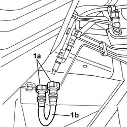
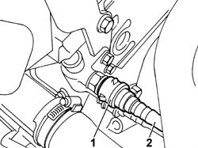
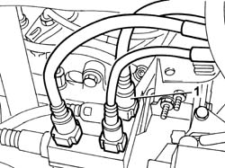
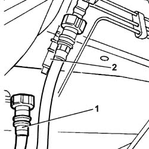
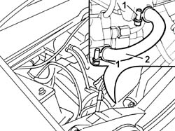

1040B54 FUEL LINE FROM MANIFOLDS - R R
- Path
- Procedures > 10 ENGINE UNIT > 1040 FUEL TANK AND PIPES > 1040B FUEL SUPPLY/RETURN CIRCUIT PIPE > 1040B54 FUEL LINE FROM MANIFOLDS - R R
- Kind
- repair procedure (removal / refitting; the operation number is the code)
- Applies to
- engines: 2.0 JTD 8V, 2.3 JTD 16V, 2.8 JTD 8V; all production periods
- Interactive page
- https://sloeber94.github.io/elrnDB-fDct/en/#/244000746
Applies to: engines: 2.3 JTD 16V; all production periods
 Removing
Removing
 Refitting
Refitting- Position the vehicle on the lift.
- Raise the lift.
Op. 7055B54 UNDER-ENGINE GUARD - R R
- Release the front return pipe from the fastening springs.
1. Disconnect the rapid connectors (1a) joining the front section to the rear section and remove the coupling (1b).

Applies to: engines: 2.3 JTD 16V; all production periods
- Lower the lift.
1. Disconnect the front return pipe from the fuel return manifold.
2. Remove the front return pipe from the engine compartment.

Applies to: engines: 2.3 JTD 16V; all production periods
Refitting
Removing- Fit the front return pipe in the engine compartment.
- Connect the front return pipe to the fuel return manifold.
- Raise the lift.
- Connect the rapid connectors joining the front and rear sections to the coupling.
- Secure the front return pipe to the fastening springs.
Op. 7055B54 UNDER-ENGINE GUARD - R R
- Lower the vehicle.
- Remove the vehicle from the lift.
Applies to: engines: 2.0 JTD 8V; all production periods
Removing
Refitting- Position the vehicle on the lift.
- Disconnect the negative battery terminal.
See in Op. 1048A10
1. Disconnect the front return pipe from the manifold.
- Open the bands fastening the pipe in the engine compartment.

Applies to: engines: 2.0 JTD 8V; all production periods
- Raise the lift.
1. Disconnect the rapid connector.
2. Remove the front fuel return pipe.
- Release the pipe from the retaining springs.

Applies to: engines: 2.0 JTD 8V; all production periods
Refitting
Removing- Fit the front fuel return pipe and connect it to the rear return pipe.
- Secure the pipe to the retaining springs.
- Lower the lift.
- Connect the front return pipe to the manifold.
- Secure the bands fastening the pipe in the engine compartment.
See in Op. 1048A10
- Connect the negative battery terminal.
- Remove the vehicle from the lift.
Applies to: engines: 2.8 JTD 8V; all production periods
Removing
Refitting- Position the vehicle on the lift.
- Disconnect the negative battery terminal.
See in Op. 1048B14
1. Open the retaining bands.
2. Remove the pipe.

Applies to: engines: 2.8 JTD 8V; all production periods
Refitting
Removing- Fit the pipe in place.
- Renew the retaining bands.
See in Op. 1048B14
- Connect the negative battery terminal.
- Remove the vehicle from the lift.